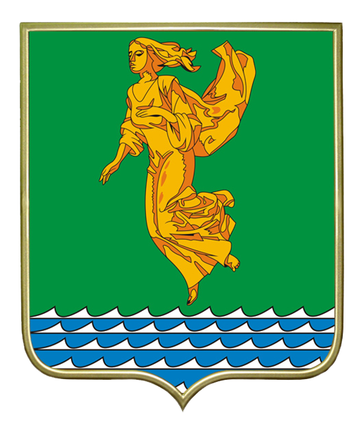

Начать тур
"Ангарск - город, рождённый победой" - именно так гласит стела, установленная на въезде в город на Московском тракте со стороны ж/д вокзала. Но что "помнит" наш город? Какие памятники хранит город Ангарск? И что же они значат? Именно на эти вопросы мы постарались ответить этим туром.